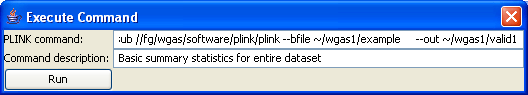

|  |
gPLINK generates the commandNext you will see a dialog that shows the PLINK command gPLINK has generated. You can edit this or add additional flags at this stage. You are also encouraged to add a line of text to describe exactly what command you are running here. This makes it easier to track PLINK jobs (you do not have to remember what valid1 means, for example.Previous | Next |